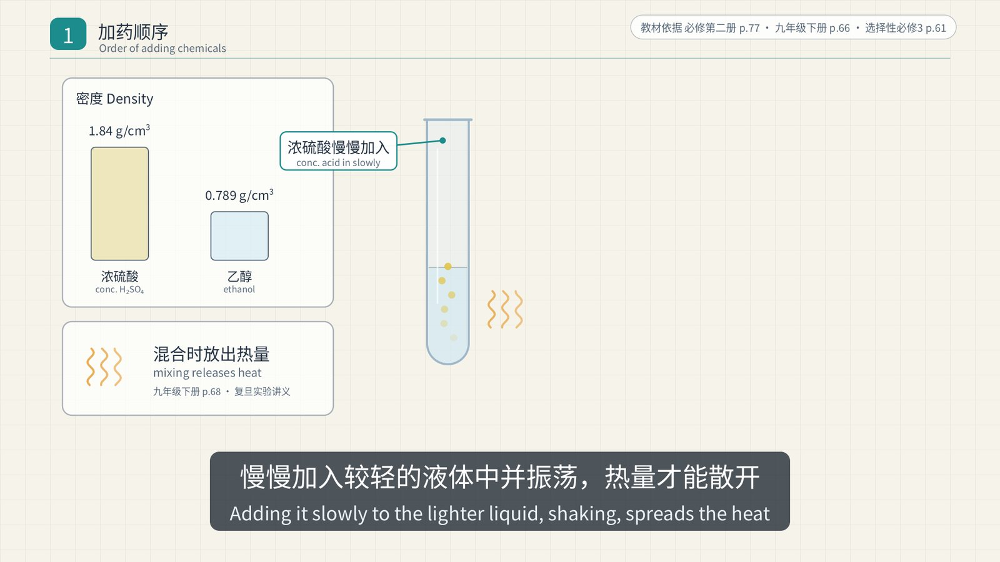
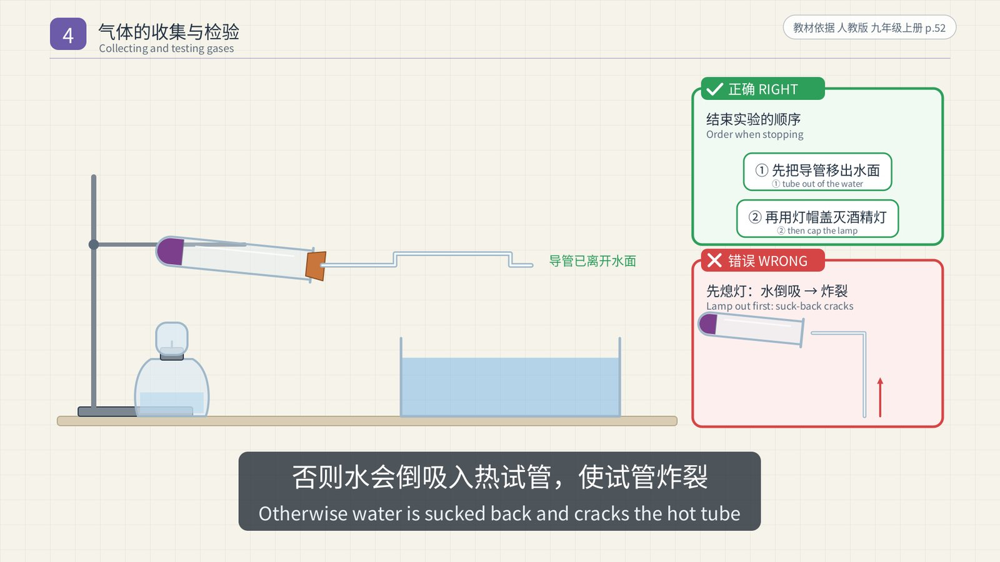
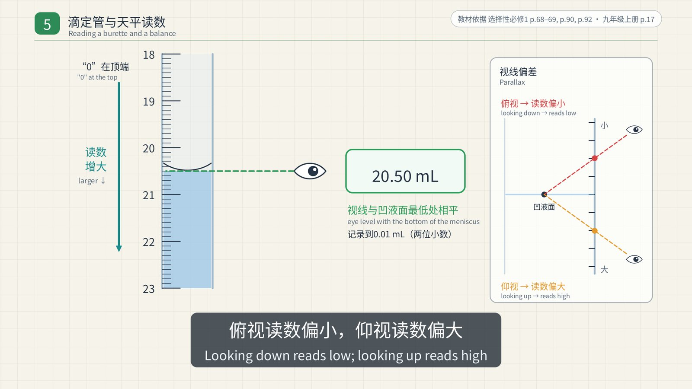
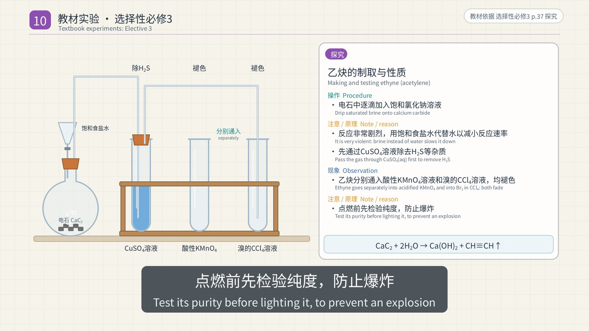
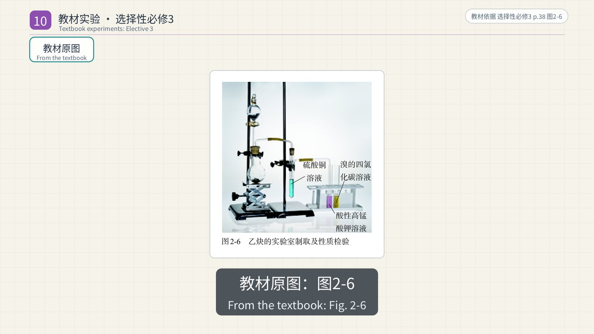
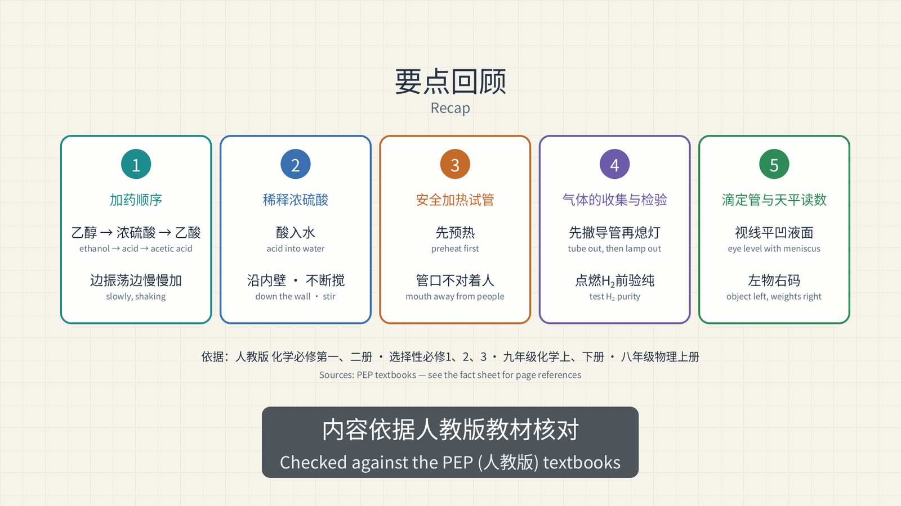

《高考化学·实验操作要点》是一部37分钟的二维动画复习视频，面向准备高考的高中生。它分两半：前半部分讲五项最常考的基本操作，后半部分把人教版五册高中化学教材里的实验逐个过一遍，一共87张实验卡片。视频为16:9、1080p、30帧/秒，配有原创配乐和中英双语字幕（中文在上、英文在下）。
做这部片子时只有一条硬性规定：安全相关的内容必须准确。每一个操作步骤和它背后的原因，都要先在教材里找到原文，写进一份附有出处的事实清单，然后才能出现在画面上。错误或危险的做法从不作为"步骤"演示，只以静帧的形式出现在标有"✗ 错误 WRONG"的红框里，并且旁边总有正确做法作对照。
视频的每一帧都由Python代码绘制，在一部安卓手机上用CPU渲染。在Claude Code中工作的Claude Opus 5.5查阅并核对了教材，编写了脚本、绘图代码和配乐，并运行了质量检查。我负责提出要求、审定分镜，并决定每一轮要补充的内容。
影片结构
| 时间 | 章节 |
|---|---|
| 0:00 | 片头 |
| 0:07 | 第一部分 加药顺序（以制取乙酸乙酯为例） |
| 1:19 | 第二部分 稀释浓硫酸 |
| 2:19 | 第三部分 安全加热试管 |
| 3:26 | 第四部分 气体的收集与检验 |
| 5:31 | 第五部分 滴定管与天平的使用和读数 |
| 7:09 | 第六部分 教材实验 · 必修第一册（24个） |
| 14:28 | 第七部分 教材实验 · 必修第二册（21个） |
| 22:12 | 第八部分 教材实验 · 选择性必修1（17个） |
| 28:16 | 第九部分 教材实验 · 选择性必修2（5个） |
| 30:07 | 第十部分 教材实验 · 选择性必修3（20个） |
| 37:04 | 要点回顾 |
前五部分各以一段"实拍"结束：从B站选取的真实实验片段，静音播放并在画面上注明作者。这些片段大多是人教社教材配套视频的转载，只选用了演示正确操作的部分。
每个演示之后，凡是教材中有对应插图的，都会接一段约5秒的"教材原图"：直接展示教材里的那幅图，并注明册次、页码和图号，方便对照课本复习。全片共65段，78幅图。
第一部分：加药顺序
以必修第二册实验7-6"乙酸乙酯的制备"为例，教材的顺序是：先在试管中加入3 mL乙醇，然后边振荡边慢慢加入2 mL浓硫酸，再加入2 mL乙酸，最后加几片碎瓷片。选择性必修3的实验活动1用量不同，顺序相同。

- 为什么先加乙醇？ 教材没有直接写出原因。片中的说法是由教材事实推出的：浓硫酸密度大（1.84 g/cm³），溶解时放出大量热，所以要把它慢慢加入较轻的液体中并不断振荡，让热量散开，这与稀释浓硫酸的道理相同。事实清单把这一条标为"推导"，而不是"教材原文"。
- 碎瓷片用于防止加热时暴沸。
- 导管口在饱和Na₂CO₃溶液液面上方，不插入液面以下，用于防止倒吸。
- 现象：饱和Na₂CO₃溶液上层出现无色透明、有香味的油状液体，即乙酸乙酯。
第二部分：稀释浓硫酸

规则只有一句：将浓硫酸沿容器内壁慢慢注入水中，并用玻璃棒不断搅拌，切不可将水倒入浓硫酸中，实验时戴好护目镜。
原因同样写在教材里（九年级下册第68页）：水的密度较小，倒进浓硫酸后会浮在上面，浓硫酸溶解时放出的热会使水立刻沸腾，使硫酸液滴向四周飞溅。

如果浓硫酸沾到皮肤上，应立即用大量水冲洗，然后涂上3%～5%的NaHCO₃溶液。高中教材在必修第二册实验5-3中沿用了这条规则：反应后的混合物冷却后，要慢慢倒入盛有少量水的试管中。
第三部分：安全加热试管
- 试管外壁干燥；液体不超过试管容积的1/3；
- 试管夹从试管底部套上、取下，夹在距管口1/4～1/3处；
- 先使试管底部均匀受热（预热），再用酒精灯的外焰固定加热；
- 试管口不要对着自己或他人；
- 加热后的试管不能立即接触冷水，以防骤冷炸裂。
加热固体（如高锰酸钾）时，试管口要略向下倾斜，防止冷凝水倒流到热的试管底部，使试管炸裂。必修第二册图5-13用氯化铵和氢氧化钙制氨时，也是这样放置试管的。

片中没有出现"倾斜45°"之类的具体角度，因为现行教材没有这样写。
第四部分：气体的收集与检验
根据气体的密度、在水中的溶解性，以及是否与水反应来选择收集方法：
| 气体 | 收集方法 | 依据 |
|---|---|---|
| O₂ | 排水法 | 不易溶于水 |
| CO₂ | 向上排空气法 | 密度比空气大 |
| H₂ | 排水法或向下排空气法 | 难溶于水，密度比空气小 |
| NH₃ | 只能用向下排空气法 | 密度比空气小，极易溶于水（约1∶700） |
用排水法收集时，要等气泡连续、均匀地冒出后再收集，因为最先排出的主要是装置里的空气。停止加热时，先把导管移出水面，再用灯帽盖灭酒精灯，否则水会倒吸入热的试管，使试管骤冷炸裂。

检验方法：带火星的木条复燃说明是O₂；能使澄清石灰水变浑浊的是CO₂，燃着的木条放在瓶口熄灭说明CO₂已集满；NH₃能使湿润的红色石蕊试纸变蓝。氢气在点燃前一定要检验纯度：发出尖锐爆鸣声说明不纯，声音很小则说明较纯。选择性必修3在制取乙炔时重复了这条规则。
第五部分：滴定管与天平
滴定管（选择性必修1，实验活动2）的使用步骤：检查活塞是否漏水 → 用待装溶液润洗2～3次 → 装液至"0"刻度以上2～3 mL并垂直固定 → 赶出尖嘴部分的气泡 → 调节液面并记录读数。
- 滴定管的"0"刻度在上方，读数从上往下增大，记录到0.01 mL（如20.00 mL）。
- 读数时视线与凹液面的最低处保持水平。
- 由于刻度从上往下增大，俯视读数偏小，仰视读数偏大，与量筒的情况正好相反。

托盘天平：放在水平桌面上 → 游码移到零刻度 → 调节平衡螺母使指针指在中线 → 左物右码，用镊子加减砝码。化学药品不能直接放在托盘上，NaOH易潮解，要放在小烧杯等容器中称量。

片中没有写"托盘天平精确到0.1 g"，因为这句话虽然常讲，但在所引用的教材中找不到原文。
第六至十部分：五册教材中的87个实验
后半部分是一组"实验卡片"：左边是动画演示的装置，右边列出操作、现象和注意/原理，底部是教材上印出的化学方程式。人教版现行高中化学教材共五册，每一册的实验都逐一收录：
- 必修第一册（24个）： Fe(OH)₃胶体与丁达尔效应、钠及其化合物、焰色试验、氯气的性质与实验室制法、Cl⁻的检验、配制一定物质的量浓度的溶液、Fe²⁺与Fe³⁺的转化、铝与酸和碱的反应、卤素间的置换、第三周期元素性质的递变等。
- 必修第二册（21个）： SO₂的性质、浓硫酸与铜、SO₄²⁻的检验、NO与NO₂、氨的喷泉实验和实验室制法、硝酸与铜、粗盐提纯、原电池、反应速率、甲烷与氯气的取代、乙烯、乙醇、葡萄糖的特征反应、淀粉、蛋白质等。
- 选择性必修1（17个）： 中和反应反应热、反应速率、浓度/压强/温度对平衡的影响、强弱电解质、盐类水解、沉淀转化、酸碱中和滴定、原电池与电解、金属腐蚀与防护、电镀、燃料电池等。
- 选择性必修2（5个）： 获得晶体的途径、碘的萃取、铜和铁的配合物、银氨配离子。
- 选择性必修3（20个）： 蒸馏、萃取与重结晶，乙炔的制取，苯与甲苯，卤代烃的水解与消去，乙醇制乙烯，苯酚，乙醛的银镜反应及其与新制Cu(OH)₂的反应，羧酸的酸性，酯的水解，官能团的检验，糖类，纤维素，蛋白质，酚醛树脂等。
下面是几张有代表性的卡片。
浓硫酸与铜（必修第二册实验5-3）。 加热后生成的气体使品红溶液褪色，说明生成了SO₂；向外拉铜丝终止反应，冷却后把试管里的物质慢慢倒入少量水中，溶液呈蓝色。尾气用NaOH溶液吸收。

硝酸与铜（实验5-8）。 浓硝酸反应剧烈，溶液变绿，试管上方出现红棕色气体；稀硝酸反应时有气泡产生，溶液变蓝。稀硝酸生成的是NO，它遇到空气中的O₂才变成红棕色的NO₂。
NO₂与水（实验5-5）。 在注射器中，NO与空气接触后变为红棕色的NO₂；振荡后颜色变浅，气体体积减小。工业上正是利用这一原理生产硝酸：
甲烷与氯气的取代反应（实验7-1）。 套上铝箔的试管里没有变化。放在光亮处（不要放在日光直射的地方）的试管里，气体颜色逐渐变浅，管壁出现油状液滴，管内水面上升。

电石与水制乙炔（选择性必修3）。 电石与水反应非常剧烈，所以用饱和氯化钠溶液代替水来减小反应速率；生成的气体先通过CuSO₄溶液除去H₂S等杂质，再分别通入酸性KMnO₄溶液和溴的CCl₄溶液（先通入一支试管，再把导管移到另一支），两者都褪色；点燃前要检验纯度。乙醇制乙烯（实验3-2）也一样：先用NaOH溶液除杂，再分别通入两种溶液。


银镜反应与新制Cu(OH)₂。 葡萄糖（必修第二册实验7-7）和乙醛（选择性必修3实验3-7、3-8）都做这两个实验。配制银氨溶液时，要向AgNO₃溶液中逐滴加入氨水，直到最初产生的沉淀恰好溶解；然后用水浴加热，试管内壁形成银镜。另一个实验是把5滴CuSO₄溶液加入2 mL 10% NaOH溶液中（NaOH过量），得到新制的Cu(OH)₂，加热后生成砖红色的Cu₂O沉淀。片中沿用教材的叫法"新制的Cu(OH)₂"：五册教材都没有使用"斐林试剂"这个词。

乙酸乙酯的水解（选择性必修3）。 三支试管中的乙酸乙酯分别加入水、稀硫酸和NaOH溶液，在70～80 ℃的水浴中加热，碱性条件下酯层消失得最快。酸性条件下水解是可逆反应；碱性条件下由于生成了乙酸盐，水解反应不可逆。
每条说法都有出处
动手制作之前，先建立了一份事实清单。片中每一个操作、现象和原因都对应清单中的一行，写明教材、页码和原文：
- 前五部分的每条说法编号为F1.x到F5.x。
- 87张实验卡片共有254条直接引自教材的说法（T）和50条推导得出的说法（D）。每条推导都写明了依据，例如"教材只提出问题，没有印出答案"。
- 原文引用由脚本逐条与教材PDF的文本层比对。在357个片段中，354个自动匹配；其余3个（一张表格和两个上下标被PDF打乱的方程式）由人工核对。
核对时也发现，有几条常见说法在现行教材里找不到依据，因此没有写进字幕：加热试管的"45°"、托盘天平"精确到0.1 g"，以及蒸馏时温度计位置和冷凝水流向的文字说明。有一幅实验卡片的初稿把加热固体的试管画成了管口朝上，审图时发现后已改正。之后又根据审片意见统一修正了装置的画法：试管立在试管架上，不再悬空；温度计插在试管里，而不是放在旁边；加热固体的试管固定在铁架台上；气体依次通过的试管都加上了双孔塞（长管进、短管出）；导管从塞子穿出，不再从管壁伸出。
所用教材均为人民教育出版社出版：普通高中教科书化学必修第一、二册，选择性必修1、2、3；基本操作部分另外参考了义务教育教科书化学九年级上、下册和物理八年级上册（天平的使用）。高中教材在讲到这些基本操作时，常常让学生回顾初中所学，所以这些规则以初中教材为准。
制作要点
- 固定节拍。 配乐速度为每分钟100拍，一拍正好0.6秒，即18帧。每个场景都从小节开头开始，每个关键动作都落在拍点上，并配有一声钟琴提示音。
- 双语字幕。 全片共459条字幕。中文每秒不超过8个字，英文每秒不超过16个字符，每条至少显示1.2秒。另外单独提供一份.srt字幕文件和一个无字幕版本。
- 可续传的分段渲染。 每个场景单独渲染成一段，并记录它所依赖代码和数据的哈希值。中途中断后，只需重新渲染缺失或已改动的段落。后来在已完成的版本上追加三册教材和几十个实验时，原有段落无需重新渲染。
- 自动化质量检查。 共22项，全部通过：字幕位于标题安全区内且互不重叠、阅读速度达标；视频按BT.709编码并正确标记；响度为−16.1 LUFS，真峰值−1.8 dBTP；音画同步误差为0毫秒；总时长正好2236.8秒（67,104帧）。

数据一览
| 时长 | 37分17秒（30帧/秒，共67,104帧） |
| 场景 | 185个（含65段教材原图） |
| 教材实验卡片 | 87张，覆盖五册人教版高中化学教材 |
| 实拍片段 | 22段，均静音并注明作者 |
| 字幕 | 459条，中英双语 |
| 事实清单 | F1–F5基本操作条目，另有254条教材原文（T）和50条推导（D） |
授权说明
配乐、动画和图形均为本片原创。"教材原图"取自人民教育出版社的教材，版权归出版社所有。实拍片段截取自他人在B站发布的视频，其中多数是人教社教材配套视频的转载，版权属于原作者。这些片段在片中静音播放并注明出处，适合个人复习和课堂使用；如需公开发布完整视频，应先取得版权方许可，或替换这些片段。
正在加载评论…